Miscellaneous problems
Q1.1
| > | with(plots): |
| > | display(
plot([cos(t)/2-cos(2*t)/4,sin(t)/2-sin(2*t)/4,t=0..2*Pi]), plot([cos(t)/4-1,sin(t)/4,t=0..2*Pi]), plot([-0.1225+0.0945*cos(t), 0.7449+0.0945*sin(t),t=0..2*Pi]), plot([-0.1225+0.0945*cos(t),-0.7449+0.0945*sin(t),t=0..2*Pi]), scaling=constrained,axes=none ); |
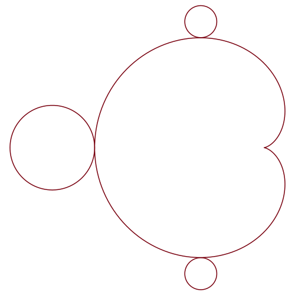 |
Here is a picture of the full Mandelbrot set:
| > |
_________________________________________________________________________________
Q1.2:
| > | with(plots): |
Here is the picture for  :
:
| > | implicitplot(abs(x)^6+abs(y)^6=6^(6/2),x=-3..3,y=-3..3,grid=[200,200]); |
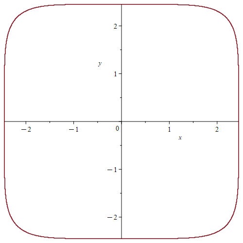 |
Here are 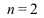 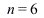
| > | display(
implicitplot(abs(x)^2+abs(y)^2=2^(2/2),x=-3..3,y=-3..3,grid=[200,200]), implicitplot(abs(x)^6+abs(y)^6=6^(6/2),x=-3..3,y=-3..3,grid=[200,200]) ); |
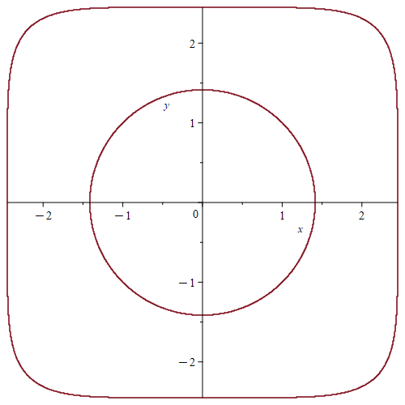 |
Here is the full picture:
| > | display(
seq( implicitplot(abs(x)^n+abs(y)^n=n^(n/2), x=-3..3,y=-3..3,grid=[200,200]), n=1..9) ); |
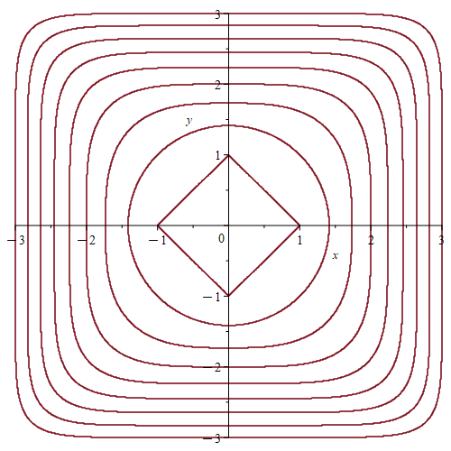 |
| > |
|
_________________________________________________________________________________
Q1.3:
| > |
| > | listplot([seq(50^n/n!,n=0..100)],style=point); |
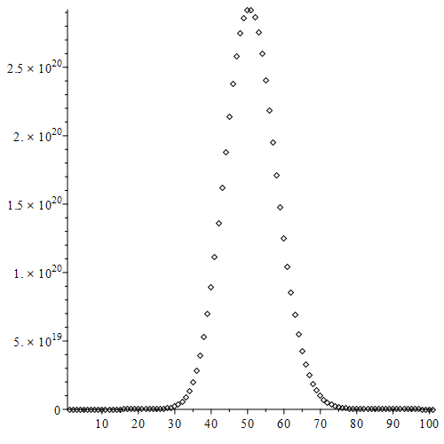 |
_________________________________________________________________________________
Q1.4
| > |
| > | c := 0.5;
f := (t) -> Re(MTM[zeta](c+I*t)): g := (t) -> Im(MTM[zeta](c+I*t)): |
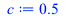 |
(1) |
| > | plot([f(t),g(t)],t=0..15); |
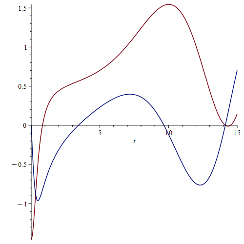 |
| > | plot([f(t),g(t)],t=14..14.3); |
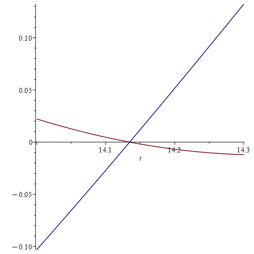 |
| > | plot([f(t),g(t),t=0..50]); |
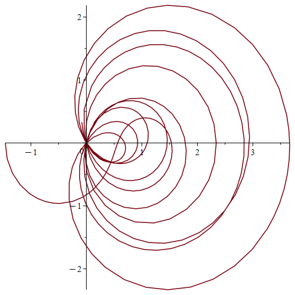 |
| > |
| > |
| > |
_________________________________________________________________________________
Q1.4:
| > | y := exp(-1/x); |
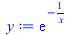 |
(2) |
We can work out the first few derivatives as follows:
| > | diff(y,x); |
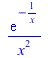 |
(3) |
| > | simplify(diff(y,x$2)); |
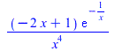 |
(4) |
| > | simplify(diff(y,x$3)); |
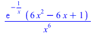 |
(5) |
| > | simplify(diff(y,x$4)); |
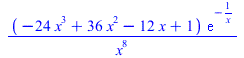 |
(6) |
| > | simplify(diff(y,x$5)); |
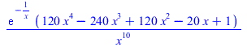 |
(7) |
We see that 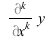 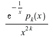 . Explicitly, the first ten of these
. Explicitly, the first ten of these
polynomials are as follows:
| > | for k from 1 to 10 do p[k] := expand(x^(2*k)*diff(y,x$k)/y); od; |
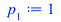 |
|
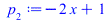 |
|
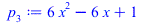 |
|
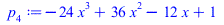 |
|
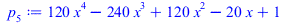 |
|
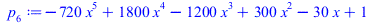 |
|
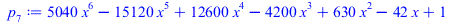 |
|
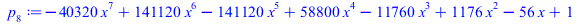 |
|
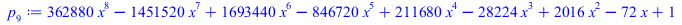 |
|
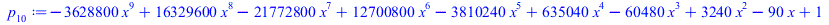 |
(8) |
We see from this that 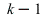 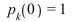 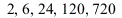 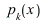 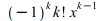 always has degree
always has degree
the numbers
| > |
We can plot the derivatives up to 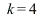
maximum value so that we can see them clearly in the same picture. We find that the higher derivatives
oscillate wildly for moderately small values of  , but then flatten out for very small values of
, but then flatten out for very small values of  , and also
, and also
for reasonably large values of  ..
..
| > | plot([
y/0.6, diff(y,x)/0.55, diff(y,x,x)/2.5, diff(y,x,x,x)/30, diff(y,x,x,x,x)/600], x=0..2); |
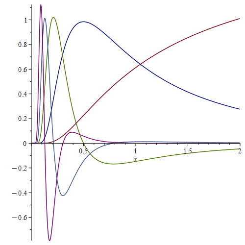 |
This plot of the sixth derivative reinforces the same message.
| > | plot(diff(y,x$6),x=0..3,-100..100); |
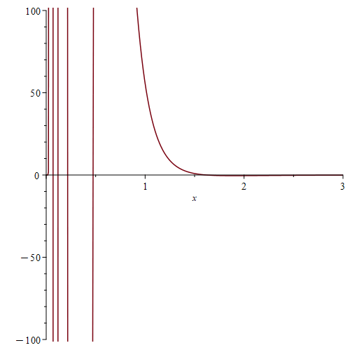 |
We can watch the curves flattening out near the origin as follows:
| > | plot([
y, diff(y,x), diff(y,x,x), diff(y,x,x,x), diff(y,x,x,x,x)], x=0..0.1,0..0.002); |
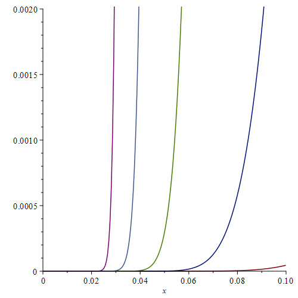 |
| > |
_________________________________________________________________________________
Solitons
_________________________________________________________________________________
| > | with(plots): |
We can enter the basic definitions as follows.
| > | q := sqrt(2);
p := log(3 + 2*q); r := x-4*t; s := q*(x - 8*t); T := 32 * cosh(2*r-p) + 16 * cosh(2*s-p) + 16; B := 4*(1+q) * cosh(r)*cosh(s) + (4*q-8)*exp(r+s); phi[0] := 2*cosh(r)^(-2); phi[1] := 4*cosh(s)^(-2); phi[2] := 2*cosh(r-p)^(-2); phi[3] := 4*cosh(s-p)^(-2); phi[4] := T/B^2; |
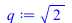 |
|
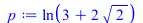 |
|
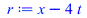 |
|
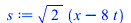 |
|
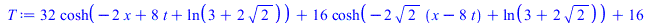 |
|
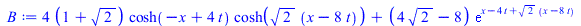 |
|
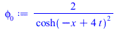 |
|
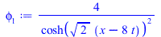 |
|
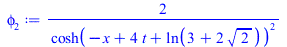 |
|
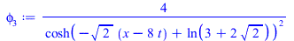 |
|
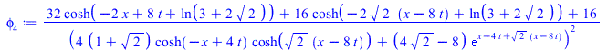 |
(9) |
| > |
We now check that the Korteweg-de Vries equation is satisfied. The tidiest way is to introduce the KdV operator as follows:
| > | K := (u) -> diff(u,t) + diff(u,x,x,x) + 6 * u * diff(u,x); |
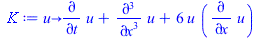 |
(10) |
We now apply  to the functions
to the functions  :
:
| > | simplify(K(phi[0]));
simplify(K(phi[1])); simplify(K(phi[2])); simplify(K(phi[3])); |
| (11) |
If we just apply directly to  then we get several pages of dense output, because Maple is not very good at simplifying
then we get several pages of dense output, because Maple is not very good at simplifying
hyperbolic functions. As explained in the problem sheet, we need to convert everything to exponential form first.
| > | convert(phi[4],exp); |
| (12) |
| > |
| > | simplify(K(convert(phi[4],exp))); |
| (13) |
| > |
We can plot all the functions together as follows. The bottom one is  and the top one is
and the top one is  .
.
| > | animate(
plot, [[phi[0],phi[1]+5,phi[2]+10,phi[3]+15,phi[4]+20],x=-30..30], t=-3..3, frames=50, scaling=constrained, axes=none); |
We see that is essentially the same as  but delayed slightly; this is already easy to see from the formulae.
but delayed slightly; this is already easy to see from the formulae.
Similarly,  is a slightly delayed copy of . When
is a slightly delayed copy of . When  is negative, the small hump in
is negative, the small hump in  follows and the
follows and the
large hump in  follows , so
follows , so  is approximately . Near the two humps interact, the large one
is approximately . Near the two humps interact, the large one
jumps forward a little to follow  , and the small hump drops back a little to follow
, and the small hump drops back a little to follow  . Thus, when
. Thus, when  is positive
is positive
we see that  is approximately .
is approximately .
We can see all this again in the following animation. The middle graph is . The bottom graph is ;
we find that this is very small when  is negative. The top graph is ; we find that this is very small when
is negative. The top graph is ; we find that this is very small when
 is positive.
is positive.
| > | animate(
plot, [[phi[4]-phi[1]-phi[2]-10,phi[4],phi[4]-phi[0]-phi[3]+10],x=-30..30], t=-3..3, frames=50, scaling=constrained, axes=none); |
We now calculate the momenta of :
| > | M[0] := int(phi[0],x=-infinity..infinity);
M[1] := int(phi[1],x=-infinity..infinity); M[2] := int(phi[2],x=-infinity..infinity); M[3] := int(phi[3],x=-infinity..infinity); |
| (14) |
We can do this more efficiently as follows:
| > | for i from 0 to 3 do
M[i] := int(phi[i],x=-infinity..infinity); od; |
| (15) |
For we need a more elaborate method, as described in the problem sheet:
| > | M[4] := int(subs(t=0,phi[4]),x=-infinity..infinity,numeric); |
| (16) |
We find that , apart from a tiny error that would go away if we computed the integral more accurately.
| > | evalf(M[4] - M[1] - M[2]); |
| (17) |
| > |
We now repeat this for the energy:
| > | for i from 0 to 3 do
E[i] := int(phi[i]^2,x=-infinity..infinity); od; |
| (18) |
| > |
| > | E[4] := int(subs(t=0,phi[4]^2),x=-infinity..infinity,numeric); |
| (19) |
| > | evalf(E[4] - E[1] - E[2]); |
| (20) |
| > |
| > |